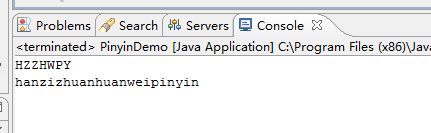

java实现将汉字转为拼音
有时候为了方便操作程序的开发，需要将汉字转为拼音等操作。下面这个是自己结合网上的资料，加上自己在公司项目中的亲自实践。完整的实现了将汉字转为拼音的操作。这个Demo只是负责将其转换，在main方法中测试，在实际需要中，只需要调用这个类中的方法即可。本人也是在学习中总结，欢迎各位大神拍砖指教，本人邮箱：it_red@sina.com。转载本博客时请在文章明显位置标明文章出处（ itRed的博客：http://www.cnblogs.com/itred ）。
首先贴出测试结果：

测试参数：
汉字转换为拼音
汉字转换为拼音
main测试方法的代码：
1 public static void main(String[] args) { 2 System.out.println(ToFirstChar("汉字转换为拼音").toUpperCase()); //转为首字母大写 3 System.out.println(ToPinyin("汉字转换为拼音")); 4 }
本功能的实现时利用java开源库，开发此程序需要一个jar包。本人用的是 pinyin4j–2.5.0.jar 。网上可以直接下载，也可以在其官网进行下载。在此不祥述。如果实在不乐意，可以 点击下载 将进行这个jar包的下载。
贴出实现该Demo的源码：
1 package com.red.test; 2 3 import net.sourceforge.pinyin4j.PinyinHelper; 4 import net.sourceforge.pinyin4j.format.HanyuPinyinCaseType; 5 import net.sourceforge.pinyin4j.format.HanyuPinyinOutputFormat; 6 import net.sourceforge.pinyin4j.format.HanyuPinyinToneType; 7 import net.sourceforge.pinyin4j.format.exception.BadHanyuPinyinOutputFormatCombination; 8 9 /** 10 * 汉字转换为拼音 11 * @author Red 12 */ 13 public class PinyinDemo { 14 /** 15 * 测试main方法 16 * @param args 17 */ 18 public static void main(String[] args) { 19 System.out.println(ToFirstChar("汉字转换为拼音").toUpperCase()); //转为首字母大写 20 System.out.println(ToPinyin("汉字转换为拼音")); 21 } 22 /** 23 * 获取字符串拼音的第一个字母 24 * @param chinese 25 * @return 26 */ 27 public static String ToFirstChar(String chinese){ 28 String pinyinStr = ""; 29 char[] newChar = chinese.toCharArray(); //转为单个字符 30 HanyuPinyinOutputFormat defaultFormat = new HanyuPinyinOutputFormat(); 31 defaultFormat.setCaseType(HanyuPinyinCaseType.LOWERCASE); 32 defaultFormat.setToneType(HanyuPinyinToneType.WITHOUT_TONE); 33 for (int i = 0; i < newChar.length; i++) { 34 if (newChar[i] > 128) { 35 try { 36 pinyinStr += PinyinHelper.toHanyuPinyinStringArray(newChar[i], defaultFormat)[0].charAt(0); 37 } catch (BadHanyuPinyinOutputFormatCombination e) { 38 e.printStackTrace(); 39 } 40 }else{ 41 pinyinStr += newChar[i]; 42 } 43 } 44 return pinyinStr; 45 } 46 47 /** 48 * 汉字转为拼音 49 * @param chinese 50 * @return 51 */ 52 public static String ToPinyin(String chinese){ 53 String pinyinStr = ""; 54 char[] newChar = chinese.toCharArray(); 55 HanyuPinyinOutputFormat defaultFormat = new HanyuPinyinOutputFormat(); 56 defaultFormat.setCaseType(HanyuPinyinCaseType.LOWERCASE); 57 defaultFormat.setToneType(HanyuPinyinToneType.WITHOUT_TONE); 58 for (int i = 0; i < newChar.length; i++) { 59 if (newChar[i] > 128) { 60 try { 61 pinyinStr += PinyinHelper.toHanyuPinyinStringArray(newChar[i], defaultFormat)[0]; 62 } catch (BadHanyuPinyinOutputFormatCombination e) { 63 e.printStackTrace(); 64 } 65 }else{ 66 pinyinStr += newChar[i]; 67 } 68 } 69 return pinyinStr; 70 } 71 }
作者：itRed
出处：http://itred.cnblogs.com
版权声明：本文版权归作者和博客园共有，欢迎转载，但未经作者同意必须保留此段说明，且在文章明显位置给出原文链接，否则保留追究法律责任的权利。